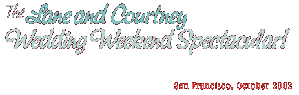

Last weekend, Jeff and I went to San Francisco for the wedding of our friends, Lane and Courtney. This is a collection of approximately 40 photos out of the 250+ I snapped during the course of the trip. Enjoy!
START THE SHOW